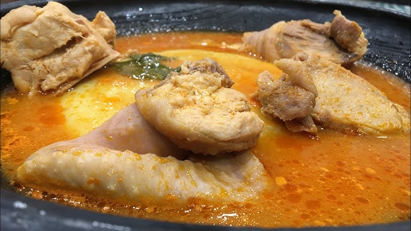

Fufuo and Chicken Soup

Description of Recipe
Fufuo is a treasured and much loved recipe adored by Ghanaians nationwide and across the globe.
It is a very simple dish that is birthed from mixing plantain and cassava or yam together.
Finally you add this combination with the magic touch which is the soup. For this meal
we are going to be using the traditional Ghanaian Chicken Light Soup.
Ingredients for Fufuo
- 4 cassava roots, peeled and sliced
- 5 medium yellow plantains, with peels on
- ½ cup butter, or more as needed
Ingredients for Chicken Light Soup
- 4 large tomatoes
- 2 medium-sized onions
- 3 cloves of garlic
- 2 chillies (or more if you wish)
- 1 root ginger
-
1 whole soup chicken chopped into pieces
(alternatives: any vegetables of your choosing, other types of meat, fresh or smoked fish)
-
Salt and pepper to taste
( 2 teaspoons of chicken stock alternatives: fish stock, beef stock, or vegetable stock)
- A small handful of torn basil
Steps to bringing this magic to life!!
- Gather all ingredients.
- Place cassava and unpeeled plantains into a large pot. Fill with enough water to cover and bring to a boil.
- Cook until cassava is soft, about 30 minutes; drain.
- Remove and discard plantain peels from plantains.
- Mash cassava and plantains with butter.
- Beat with an electric mixer until smooth, adding more butter if needed.
- Portion the dough into balls.
for the Chicken Light Soup
- In a large pot, combine all the ingredients with 1.5 litres of water. Boil on high heat for 20 minutes.
- Remove the tomatoes, onion, garlic, chillies, and ginger from the pot.
- Blend the removed vegetables together and return the mixture to the pot.
- Continue cooking; note that cooking time for chicken may vary depending on the quantity.
- When the chicken is tender, lower the heat and stir in the basil.
- Let it simmer for a few more minutes before serving.
- Now serve Fufuo in a bowl with the hot delicious soup and voila!!!
Here's a link back to the Home page
Home